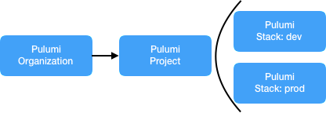
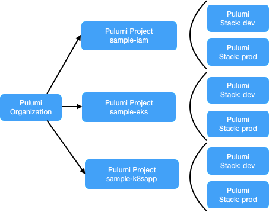
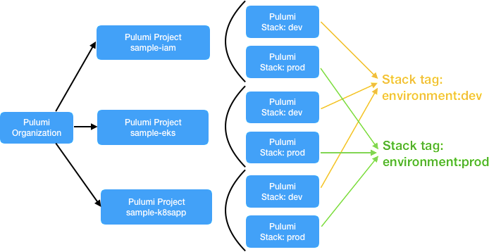
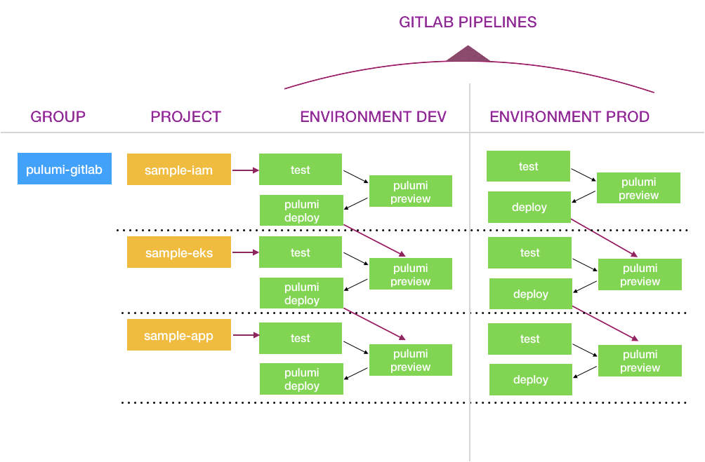

Continuous Delivery with GitLab and Pulumi on Amazon EKS

In this blog, we will work through an example that shows how to use Pulumi to enable GitLab-based continuous delivery with your Kubernetes workloads on Amazon EKS. This integration will work just as seamlessly for any Kubernetes cluster, including Azure AKS or Google GKE, using the relevant Pulumi libraries for Azure and GCP.
Prerequisites
- An account on https://app.pulumi.com with an organization.
- The latest
pulumiCLI. Installation instructions are here. - A bare repository. Set the remote URL to be your GitLab project.
Concepts in Pulumi
Organization of Pulumi Projects and Pulumi Stacks
All users in the Pulumi service will start with the hierarchy of an organization. This can be a specific GitHub, GitLab or Atlassian organization or your solo organization. Inside each organization, users create Pulumi projects and stacks.
Pulumi projects and stacks are flexible to accommodate the diverse needs across teams, applications, and infrastructure scenarios. Just like Git repos that work with varying approaches Pulumi projects and stacks allow you to organize your code within them. Immediate options include:
- Monolithic project/stack structure: A single project defines the infrastructure and application resources for an entire vertical service as represented in the image below:

- Micro-stacks project/stack structure: A project broken into separately managed smaller projects, often across different dimensions as represented in the image below:

Working with Inter-Stack Dependencies with the latter option is more suited in a production setup giving users more flexibility and boundaries between their teams. We will use this structure in our example below. For more information on Pulumi projects and stacks, please refer to our documentation here.
Use Tags to group Pulumi Stacks as Environments:
- Pulumi Stacks have associated metadata in the form of key/value tags.
- You can assign custom tags to stacks (when logged into the
web backend to customize how
stacks are listed in the Pulumi Cloud Console.
- In our example below we have two environments prod and dev.
- To group stacks by environment we assign custom tags
environment: prodandenvironment: devto the respective stacks - In the Pulumi Cloud Console, you’ll be able to group stacks by
tag:
environment:devand tag:environment:prod.
Please read more about managing stack tags in Pulumi.

Let’s now work through our example with GitLab Pipelines.
Please replace the highlighted
<org-name-in-pulumi>below with your Pulumi organization name to run through the steps successfully.
GitLab Pipeline by Environment
- We created a GitLab Group called pulumi-gitlab.
- We created three GitLab projects called sample-iam, sample-eks and sample-k8sapp. These projects match the project names in Pulumi SaaS platform.
- We have two pipelines: environment:dev and environment:prod.
In the two pipelines, we have a total of six pulumi stacks:
<org-name-in-pulumi>/sample-iam/dev, and<org-name-in-pulumi>/sample-iam/prod.<org-name-in-pulumi>/sample-eks/devand<org-name-in-pulumi>/sample-eks/prod.<org-name-in-pulumi>/sample-k8sapp/devand<org-name-in-pulumi>/sample-k8sapp/prod.
<org-name-in-pulumi>/sample-iam/dev stack will trigger the
downstream stack <org-name-in-pulumi>/sample-eks/dev
provided the cycle of pulumi preview and pulumi deploy completes
without any failure.
Similarly, <org-name-in-pulumi>/sample-eks/dev will trigger
the downstream stack <org-name-in-pulumi>/sample-k8sapp/dev
provided the cycle of pulumi preview and pulumi deploy completes
without any failure.
- To use Pulumi within GitLab CI, there are a few environment
variables you’ll need to set for each build.
- The first is
PULUMI_ACCESS_TOKEN, which is required to authenticate with pulumi.com in order to perform the preview or update. You can create a new Pulumi access token specifically for your CI/CD job on your Pulumi Account page. - Next, you will also need to set environment variables specific
to your cloud resource provider. For example, if your stack is
managing resources on AWS,
AWS_ACCESS_KEY_IDandAWS_SECRET_ACCESS_KEY.
- The first is
Create Pulumi stacks and push the files to your GitLab project
If you run pulumi from any branch other than the master branch, you
will hit an error that the PULUMI_ACCESS_TOKEN environment variable
cannot be accessed. You can fix this by specifying a wildcard regex to
allow specific branches to be able to access the secret environment
variables. Please refer to the GitLab
documentation
to understand this better.
First we set up three Pulumi stacks: sample-iam; sample-eks and
sample-k8sapp with group stack tag: environment:dev
Step 1: Create the pulumi stack “sample-IAM” and set stack tag
“key:value” = “environment:dev”.
We update the index.ts file with the relevant code block as shown
below and run pulumi up.
$ pulumi new aws-typescript --dir <org-name-in-pulumi>/sample-iam/dev
$ cd <org-name-in-pulumi>/sample-iam/devLet’s run pulumi up with the following index.ts file.
import * as aws from "@pulumi/aws";
function createIAMRole(name: string): aws.iam.Role {
// Create an IAM Role
return new aws.iam.Role(`${name}`, {
assumeRolePolicy: `{
"Version": "2012-10-17",
"Statement":[
{
"Sid": "",
"Effect": "Allow",
"Principal": {
"AWS": "arn:aws:iam::153052954103:root"
},
"Action": "sts:AssumeRole"
}
]
}`,
tags: {
"clusterAccess": `${name}-usr`,
},
});
}
// Administer automation role for use in pipelines, e.g. gitlab CI, Teamcity, etc.
export const automationRole = createIAMRole("automationRole");
export const automationRoleArn = automationRole.arn;We then group the stack by initializing it with a new stack tag
“key:value” = “environment:prod” and run pulumi up with the same
index.ts file.
$ pulumi up
# Initialize new pulumi stack in the format:
# pulumi stack init <org-name-in-pulumi>/<project>/<stack>
$ pulumi stack init <org-name-in-pulumi>/sample-iam/prod
$ pulumi stack tag set environment prod
$ pulumi upStep 2: Create the pulumi stack sample-eks and set stack tag “key:value” = “environment:dev”.
$ pulumi new aws-typescript --dir <org-name-in-pulumi>/sample-eks/dev
$ cd <org-name-in-pulumi>/sample-eks/devUpdate the index.ts file with the relevant code block as shown below:
import * as aws from "@pulumi/aws";
import * as awsx from "@pulumi/awsx";
import * as eks from "@pulumi/eks";
import * as k8s from "@pulumi/kubernetes";
import * as pulumi from "@pulumi/pulumi";
const env = pulumi.getStack();
const iamstack = new pulumi.StackReference(`<org-name-in-pulumi>/sample-iam/${env}`);
const automationRoleArn = iamstack.getOutput("automationRoleArn")
/* * Single step deployment of EKS cluster with the most important variables and simple function to create two namespaces */
const vpc = new awsx.Network("vpc");
const cluster = new eks.Cluster("eks-cluster", {
vpcId : vpc.vpcId,
subnetIds : vpc.subnetIds,
instanceType : "t2.medium",
nodeRootVolumeSize: 200,
desiredCapacity : 1,
maxSize : 2,
minSize : 1,
deployDashboard : false,
vpcCniOptions : {
warmIpTarget : 4,
},
roleMappings : [
// Map IAM role arn "automationRoleArn" to the k8s user with name "automation-usr", e.g. gitlab CI
{
groups : ["pulumi:automation-grp"],
roleArn : automationRoleArn,
username : "pulumi:automation-usr",
},
],
});
export const clusterName = cluster.eksCluster.name;
/* * Single Step deployment of k8s RBAC configuration */
new k8s.rbac.v1.Role("automationRole", {
metadata: {
name: "automationRole",
namespace: "automation",
},
rules: [{
apiGroups: ["*"],
resources: ["*"],
verbs: ["*"],
}]
}, {provider: cluster.provider});
new k8s.rbac.v1.RoleBinding("automation-binding", {
metadata: {
name: "automation-binding",
namespace: "automation",
},
subjects: [{
kind: "User",
name: "pulumi:automation-usr",
apiGroup: "rbac.authorization.k8s.io",
}],
roleRef: {
kind: "Role",
name: "automationRole",
apiGroup: "rbac.authorization.k8s.io",
},
}, {provider: cluster.provider});
export const kubeconfig = cluster.kubeconfig.apply(JSON.stringify)Let’s download the additional npm packages for EKS and Kubernetes and
run pulumi up and initialize a new stack tag “key:value” =
“environment:prod” to run pulumi up with the same index.ts file.
$ npm install --save @pulumi/eks @pulumi/kubernetes
$ pulumi up
# Initialize new pulumi stack in the format:
# pulumi stack init <org-name-in-pulumi>/<project>/<stack>
$ pulumi stack init <org-name-in-pulumi>/sample-eks/prod
$ pulumi stack tag set environment prod
$ pulumi up
Step 3: Create the pulumi stack “sample-k8sapp” and set stack tag
“key:value” = “environment:dev”.
We will then update the index.ts file with the relevant code block as
shown below:
$ pulumi new aws-typescript --dir <org-name-in-pulumi>/sample-k8sapp/dev
$ cd <org-name-in-pulumi>/sample-k8sapp/devimport * as aws from "@pulumi/aws";
import * as docker from "@pulumi/docker";
import * as k8s from "@pulumi/kubernetes";
import * as pulumi from "@pulumi/pulumi";
const env = pulumi.getStack();
const eksCluster = new pulumi.StackReference(`<org-name-in-pulumi>/sample-eks/${env}`);
const kubeconfig = eksCluster.getOutput("kubeconfig");
const k8sProvider = new k8s.Provider("eks-cluster", {
kubeconfig: kubeconfig,
});
/* * Single step deployment of one docker container in ECR */
function getImageRegistry(repo: aws.ecr.Repository) {
return repo.registryId.apply(async registryId => {
if (!registryId) {
throw new Error("Expected registry ID to be defined during push");
}
const credentials = await aws.ecr.getCredentials({ registryId: registryId });
const decodedCredentials = Buffer.from(credentials.authorizationToken, "base64").toString();
const [username, password] = decodedCredentials.split(":");
if (!password || !username) {
throw new Error("Invalid credentials");
}
return {
server: credentials.proxyEndpoint,
username: username,
password: password,
};
});
}
const ecr1 = new aws.ecr.Repository("breathe");
const image1 = new docker.Image("breathe", {
imageName: ecr1.repositoryUrl,
build: {
context: "./app",
cacheFrom: true,
},
registry: getImageRegistry(ecr1),
});
// Declare the docker container based deployment
const appLabels = { app: appName };
const breathecontainer = new k8s.apps.v1beta1.Deployment(appName, {
spec: {
selector: { matchLabels: appLabels },
replicas: 1,
template: {
metadata: { labels: appLabels },
spec: { containers: [{ name: appName, image: image1.imageName }] }
}
},
}, { provider: k8sProvider });We download the additional npm packages for EKS and Kubernetes and run
pulumi up and group a new stack by initializing it with a new stack
tag “key:value” = “environment:prod” and run pulumi up with the same
index.ts file.
$ npm install --save @pulumi/kubernetes @pulumi/docker
$ pulumi up
# Initialize new pulumi stack
$ pulumi stack init <org-name-in-pulumi>/sample-eks/prod
$ pulumi stack tag set environment prod
$ pulumi upUsing GitLab Pipelines with the six Pulumi stacks in environment:dev and environment:prod
GitLab pipelines are configured using .gitlab-ci.yml files in the root
of each repository. GitLab Silver and above is capable of running
pipelines that cross project
boundaries,
so we will be using that to construct our pipeline.
All three .gitlab-ci.yml files that we use are very similar in
structure. The base one,sample-iam, looks like this:
image:
name: pulumi/pulumi:v0.17.10
entrypoint:
- '/usr/bin/env'
- 'PATH=/usr/local/sbin:/usr/local/bin:/usr/sbin:/usr/bin:/sbin:/bin'
stages:
- preview
- update
- downstream
Pulumi Preview:
stage: preview
script:
- npm ci
- pulumi stack select pulumi/sample-iam/$DEPLOY_ENVIRONMENT
- pulumi preview
Pulumi Update:
stage: update
script:
- npm ci
- pulumi stack select pulumi/sample-iam/$DEPLOY_ENVIRONMENT
- pulumi update --skip-preview
Update EKS:
stage: downstream
trigger: pulumi-gitlab/sample-eksThis file describes a three-stage pipeline for the sample-iam project:
- First, we run a preview for the requested deployment environment, failing the pipeline if the preview fails.
- If the preview was successful, we run
pulumi update, which deploys the IAM changes. - Finally, we trigger the pipeline in
pulumi-gilab/sample-eks, which triggers the next pipeline in our pipeline daisy chain illustrated in the above image.
Despite being powerful, conceptually this setup is quite simple and doesn’t require much code to get right.

Upon a successful update, each tier’s pipeline will trigger a pipeline for the tiers that depend on it. Pulumi’s StackReference feature ensures that the dependent tiers receive new copies of the outputs exported from the IAM stack, so the deployment flows naturally through the pipeline!
This brings us to the end of our CD solution with Pulumi and GitLab on Amazon EKS. For more examples, refer to the Pulumi examples repository. Refer to my previous post on Amazon EKS and k8s RBAC in Pulumi.
Posted on